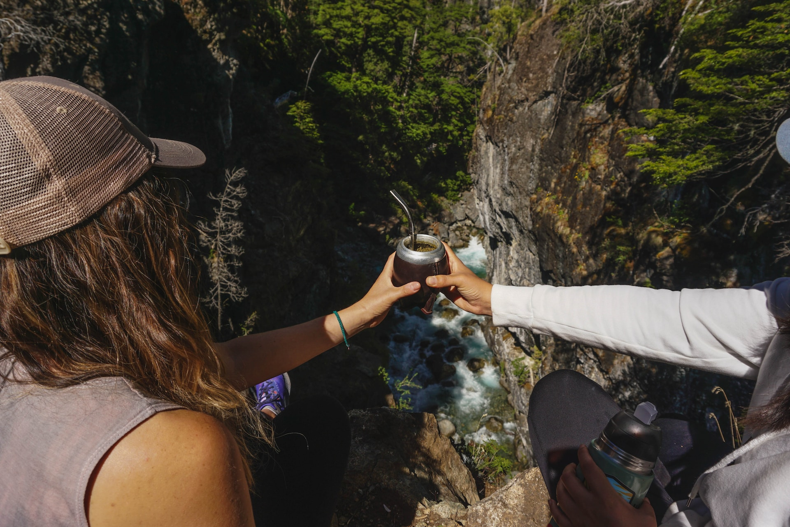

Somos un grupo de amigos amantes de los mates y de la programacion,juntando estas 2 creamos este espacio que lo llamamos "Progra-mate" haciendo alusion estas dos pasiones. Buscamos acercarte un buen producto y consejos de como utilizarlo de la mejor manera, que te acompañe en esos momentos de soledad, trabajo, viajes, encuentros, etc. Esperemos que podamos ser una pequeña parte de tu vida y acompañarte a donde quiera que vayas a tomar unos mates.

